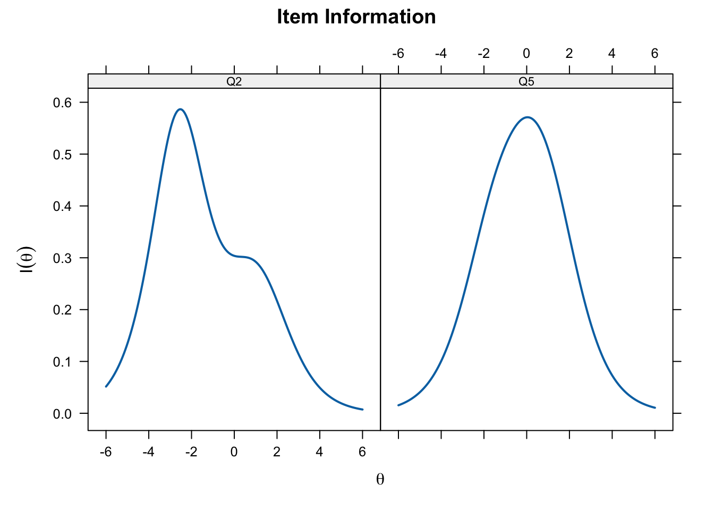
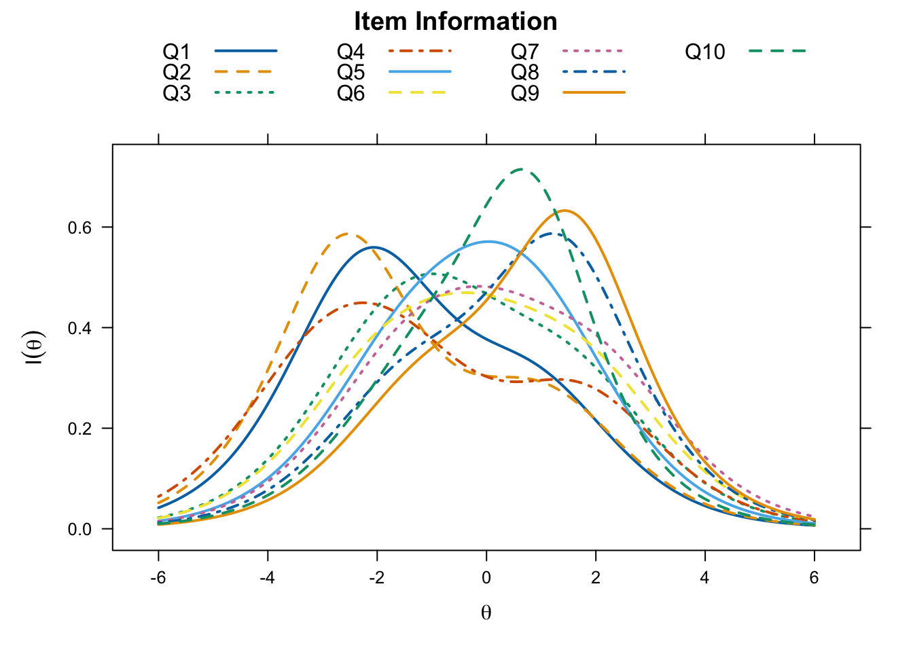
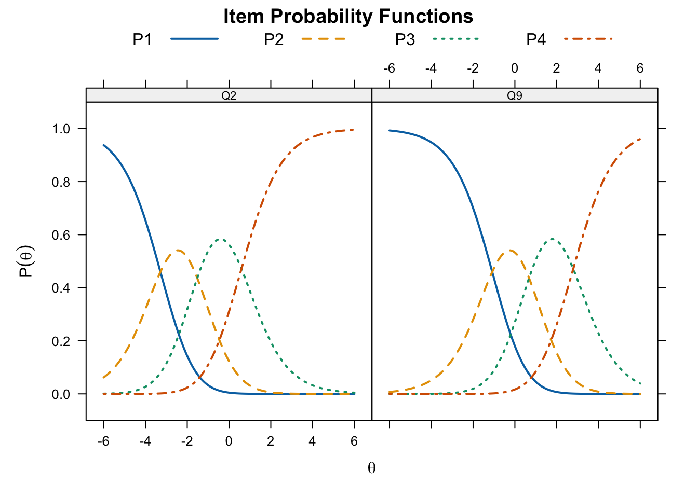

library(hemp)
library(mirt)
data(rse)8 Item Response Theory for Polytomous Items
8.1 Chapter Overview
8.1.1 Dichotomous vs Polytomous Items
So far we have required that responses be dichotomous (or scored dichotomously). This could be correct (1) and incorrect(0) or endorse (1) and not endorse (0). Which of the following items are dichotomous and which are polytomous?
1. Which of the following is an example of a chemical reaction?
A. A rainbow (0)
B. Lightning (0)
C. Burning wood (1)
D. Melting snow (0)
2. I have dropped many of my interests and activities.
A. Agree (1)
B. Disagree (0)
3. On the whole, I am satisfied with myself.
A. Strongly Agree (3)
B. Agree (2)
C. Disagree (1)
D. Strongly Disagree (0)The third item is polytomous, because this item cannot be scored as either endorsed or not endorsed. Instead the Likert scaling are aimed at determining level of endorsement.
In this chapter we will consider a number of models for instruments with polytomous items. These will consist of polytomous Rasch models for ordinal items, polytomous non-Rasch models for ordinal items, and polytomous models for nominal models.
8.1.2 Data Example: The Rosenberg Self-Esteem Scale
For most of the examples in this chapter we will use the data from the Roseberg Self-Esteem Scale. This data entitled rse is part of the hemp package and can be loaded, along with the needed packages, as follows.
Below is information that can be obtained in the help file for this data (e.g. typing ?rse in the console after the hemp package is loaded).
8.1.2.1 Description
The RSE data set was obtained via online with an interactive version of the Rosenberg Self-Esteem Scale (Rosenberg, 1965). Individuals were informed at the start of the test that their data would be saved. When they completed the scale, they were asked to confirm that the responses they had given were accurate and could be used for research, only those who confirmed are included in this dataset. A random sample of 1000 participants who completed all of the items in the scale were included in the RSE data set. All of the 10 rating scale items were rated on a 4-point scale (i.e., 1=strongly disagree, 2=disagree, 3=agree, and 4=strongly agree). Items 3, 5, 8, 9 and 10 were reversed-coded in order to place all the items in the same direction. That is, higher scores indicate higher self-esteem.
8.1.2.2 Format
A data frame with 1000 participants who responded to 10 rating scale items in an interactive version of the Rosenberg Self-Esteem Scale (Rosenberg, 1965). There are also additional demographic items about the participants:
8.1.2.3 Questions
| Question | Description |
|---|---|
| Q1 | I feel that I am a person of worth, at least on an equal plane with others. |
| Q2 | I feel that I have a number of good qualities. |
| Q3* | All in all, I am inclined to feel that I am a failure. |
| Q4 | I am able to do things as well as most other people. |
| Q5* | I feel I do not have much to be proud of. |
| Q6 | I take a positive attitude toward myself. |
| Q7 | On the whole, I am satisfied with myself. |
| Q8* | I wish I could have more respect for myself. |
| Q9* | I certainly feel useless at times. |
| Q10* | At times, I think I am no good at all. |
| gender | Chosen from a drop down list (1=male, 2=female, 3=other; 0=none was chosen) |
| age | Entered as a free response. (0=response that could not be converted to integer) |
| source | How the user came to the web page of the RSE scale (1=Front page of personality website, 2=Google search, 3=other) |
| country | Inferred from technical information using MaxMind GeoLite |
| person | Participant identifier |
Note: * = indicates a reverse coded item.
8.1.2.4 Source
The The Rosenberg Self-Esteem Scale is available at http://personality-testing.info/tests/RSE.php.
8.1.2.5 Exploring rse Date
round(cor(rse[ ,1:10]),2) Q1 Q2 Q3 Q4 Q5 Q6 Q7 Q8 Q9 Q10
Q1 1.00 0.69 0.49 0.58 0.47 0.61 0.56 0.35 0.39 0.49
Q2 0.69 1.00 0.45 0.53 0.50 0.57 0.52 0.29 0.39 0.46
Q3 0.49 0.45 1.00 0.45 0.63 0.59 0.59 0.41 0.56 0.61
Q4 0.58 0.53 0.45 1.00 0.39 0.48 0.48 0.28 0.37 0.41
Q5 0.47 0.50 0.63 0.39 1.00 0.55 0.56 0.38 0.52 0.57
Q6 0.61 0.57 0.59 0.48 0.55 1.00 0.74 0.47 0.52 0.61
Q7 0.56 0.52 0.59 0.48 0.56 0.74 1.00 0.47 0.52 0.58
Q8 0.35 0.29 0.41 0.28 0.38 0.47 0.47 1.00 0.51 0.53
Q9 0.39 0.39 0.56 0.37 0.52 0.52 0.52 0.51 1.00 0.74
Q10 0.49 0.46 0.61 0.41 0.57 0.61 0.58 0.53 0.74 1.00heatmap(cor(rse[ ,1:10]), )8.2 Polytomous Rasch Models for Ordinal Items
8.2.1 Partial Credit Model
\[ P(X_i | \theta, \delta_{ih}) = \frac{exp[\Sigma_{h=0}^{x_i}(\theta - \delta_{ih})]}{\Sigma_{k=0}^{m_i} exp[\Sigma_{h=0}^{k}(\theta - \delta_{ih})]} \tag{8.1}\]
- \(\theta\) is the latent trait
- \(\delta_{ih}\) is the step parameter (and difficulty) that represents obtaining \(h\) points over \(h - 1\) points.
- \(m_i\) is the maximum response category
- The probability of obtaining \(X_i\) points, where \(X_i = 0, 1,..., m_i\)
pcm_mod <- "selfesteem = 1 - 10"
pcm_fit <- mirt(data = rse[ ,1:10],
model = pcm_mod,
itemtype = "Rasch", SE = TRUE,
verbose = FALSE) # suppress messages
pcm_params <- coef(pcm_fit, IRTpars = TRUE,
simplify = TRUE)pcm_items <- pcm_params$items
pcm_items a b1 b2 b3
Q1 1 -2.862010 -1.6407355 0.9905954
Q2 1 -3.054737 -2.1650857 1.0886321
Q3 1 -2.221950 -0.5364370 1.7623392
Q4 1 -3.350431 -1.4546799 1.8055787
Q5 1 -1.849256 -0.0803302 1.4718476
Q6 1 -2.183106 -0.1655968 2.0228575
Q7 1 -1.783392 0.1374231 2.3139519
Q8 1 -1.581559 0.8743338 1.9704969
Q9 1 -1.235833 1.2172079 2.0237022
Q10 1 -1.399323 0.6126267 1.1601504plot(pcm_fit, type = "trace", which.items = c(2,5),
par.settings = simpleTheme(lty = 1:4, lwd = 2),
auto.key = list(points = FALSE, lines = TRUE, columns = 4))plot(pcm_fit, type = "infotrace", which.items = c(2,5),
par.settings = simpleTheme(lwd = 2))
plot(pcm_fit, type = "infotrace",
par.settings = simpleTheme(lty = 1:4, lwd = 2),
auto.key = list(points = FALSE, lines = TRUE, columns = 4))
plot(pcm_fit, type = "infotrace", facet_items = FALSE,
par.settings = simpleTheme(lty = 1:4, lwd = 2),
auto.key = list(points = FALSE, lines = TRUE, columns = 4))
plot(pcm_fit, type = "info",
par.settings = simpleTheme(lwd = 2))8.2.2 Rating Scale Model
The rating scale model (RSM) is a restricted version of the PCM, where all items are constrained to have the same form. This is common for Likert scale instruments.
\[ P(X_i | \theta,\lambda_i, \delta_1,...\delta_m) = \frac{exp[\Sigma_{j=0}^{c}(\theta - (\lambda_i + \delta_{j})]}{\Sigma_{h=0}^{m} exp[\Sigma_{j=0}^{h}(\theta - (\lambda_i + \delta_{j}))]} \]
rsm_mod <- "selfesteem = 1 - 10"
rsm_fit <- mirt(data = rse[ ,1:10], model = rsm_mod,
itemtype = "rsm")
Iteration: 1, Log-Lik: -11753.833, Max-Change: 1.76612
Iteration: 2, Log-Lik: -10565.189, Max-Change: 0.26864
Iteration: 3, Log-Lik: -10547.907, Max-Change: 0.16988
Iteration: 4, Log-Lik: -10539.801, Max-Change: 0.12067
Iteration: 5, Log-Lik: -10535.661, Max-Change: 0.08239
Iteration: 6, Log-Lik: -10533.453, Max-Change: 0.05637
Iteration: 7, Log-Lik: -10531.077, Max-Change: 0.07378
Iteration: 8, Log-Lik: -10530.422, Max-Change: 0.01457
Iteration: 9, Log-Lik: -10530.088, Max-Change: 0.01126
Iteration: 10, Log-Lik: -10529.038, Max-Change: 0.01621
Iteration: 11, Log-Lik: -10528.924, Max-Change: 0.00449
Iteration: 12, Log-Lik: -10528.853, Max-Change: 0.00400
Iteration: 13, Log-Lik: -10528.574, Max-Change: 0.00287
Iteration: 14, Log-Lik: -10528.559, Max-Change: 0.00202
Iteration: 15, Log-Lik: -10528.547, Max-Change: 0.00178
Iteration: 16, Log-Lik: -10528.497, Max-Change: 0.00126
Iteration: 17, Log-Lik: -10528.494, Max-Change: 0.00074
Iteration: 18, Log-Lik: -10528.491, Max-Change: 0.00072
Iteration: 19, Log-Lik: -10528.483, Max-Change: 0.00040
Iteration: 20, Log-Lik: -10528.482, Max-Change: 0.00033
Iteration: 21, Log-Lik: -10528.482, Max-Change: 0.00031
Iteration: 22, Log-Lik: -10528.480, Max-Change: 0.00024
Iteration: 23, Log-Lik: -10528.480, Max-Change: 0.00014
Iteration: 24, Log-Lik: -10528.480, Max-Change: 0.00013
Iteration: 25, Log-Lik: -10528.479, Max-Change: 0.00010
Iteration: 26, Log-Lik: -10528.479, Max-Change: 0.00006rsm_params <- coef(rsm_fit, simplify = TRUE)
rsm_items <- as.data.frame(rsm_params$items)
rsm_items a1 b1 b2 b3 c
Q1 1 -3.10133 -1.339071 0.7753553 0.0000000
Q2 1 -3.10133 -1.339071 0.7753553 0.1813605
Q3 1 -3.10133 -1.339071 0.7753553 -0.8685441
Q4 1 -3.10133 -1.339071 0.7753553 -0.2943792
Q5 1 -3.10133 -1.339071 0.7753553 -1.0881623
Q6 1 -3.10133 -1.339071 0.7753553 -1.1163886
Q7 1 -3.10133 -1.339071 0.7753553 -1.4311151
Q8 1 -3.10133 -1.339071 0.7753553 -1.7382441
Q9 1 -3.10133 -1.339071 0.7753553 -2.0169971
Q10 1 -3.10133 -1.339071 0.7753553 -1.4522770plot(rsm_fit, type = "trace", which.items = c(2, 9),
par.settings = simpleTheme(lty = 1:4, lwd = 2),
auto.key = list(points = FALSE, lines = TRUE, columns = 4))
plot(rsm_fit, type = "trace", facet = FALSE,
par.settings = simpleTheme(lty = 1:4, lwd = 2),
auto.key = list(points = FALSE, lines = TRUE, columns = 2))
8.3 Polytomous Non-Rasch Models for Ordinal Items
There are two models that can be viewed as polytomous versions of the 2PL IRT model, the generalized partial credit model (GPCM) and the graded response model (GRM)
8.3.1 Generalized Partial Credit Model
\[ P(X_{ik} | \theta, a_i, \delta_{ik}) = \frac{exp[\sum^{K_{ik}}_{h=1}a_i(\theta - \delta_{ih})]}{\sum^{m_i}_{c=1} exp[\sum^c_{h=1} a_i (\theta - \delta_{ih})]} \]
\(a_i\) is the discrimination parameter. The thresholds (\(\delta_{ik}\)) are not restricted to be in the same order.
gpcm_mod <- "selfesteem = 1 - 10"
gpcm_fit <- mirt(data = rse[ ,1:10], model = gpcm_mod,
itemtype = "gpcm", SE = TRUE)
Iteration: 1, Log-Lik: -10776.362, Max-Change: 2.86983
Iteration: 2, Log-Lik: -10351.776, Max-Change: 0.80786
Iteration: 3, Log-Lik: -10283.772, Max-Change: 0.23823
Iteration: 4, Log-Lik: -10261.491, Max-Change: 0.15392
Iteration: 5, Log-Lik: -10249.603, Max-Change: 0.13059
Iteration: 6, Log-Lik: -10242.348, Max-Change: 0.10220
Iteration: 7, Log-Lik: -10237.530, Max-Change: 0.09347
Iteration: 8, Log-Lik: -10234.445, Max-Change: 0.06972
Iteration: 9, Log-Lik: -10232.291, Max-Change: 0.06364
Iteration: 10, Log-Lik: -10231.438, Max-Change: 0.03688
Iteration: 11, Log-Lik: -10230.008, Max-Change: 0.03037
Iteration: 12, Log-Lik: -10229.195, Max-Change: 0.02323
Iteration: 13, Log-Lik: -10228.554, Max-Change: 0.01831
Iteration: 14, Log-Lik: -10228.158, Max-Change: 0.01575
Iteration: 15, Log-Lik: -10227.896, Max-Change: 0.01344
Iteration: 16, Log-Lik: -10227.479, Max-Change: 0.00796
Iteration: 17, Log-Lik: -10227.440, Max-Change: 0.00461
Iteration: 18, Log-Lik: -10227.415, Max-Change: 0.00412
Iteration: 19, Log-Lik: -10227.383, Max-Change: 0.00213
Iteration: 20, Log-Lik: -10227.377, Max-Change: 0.00186
Iteration: 21, Log-Lik: -10227.372, Max-Change: 0.00115
Iteration: 22, Log-Lik: -10227.370, Max-Change: 0.00143
Iteration: 23, Log-Lik: -10227.369, Max-Change: 0.00081
Iteration: 24, Log-Lik: -10227.368, Max-Change: 0.00094
Iteration: 25, Log-Lik: -10227.365, Max-Change: 0.00071
Iteration: 26, Log-Lik: -10227.365, Max-Change: 0.00018
Iteration: 27, Log-Lik: -10227.365, Max-Change: 0.00048
Iteration: 28, Log-Lik: -10227.365, Max-Change: 0.00050
Iteration: 29, Log-Lik: -10227.365, Max-Change: 0.00034
Iteration: 30, Log-Lik: -10227.365, Max-Change: 0.00037
Iteration: 31, Log-Lik: -10227.365, Max-Change: 0.00029
Iteration: 32, Log-Lik: -10227.364, Max-Change: 0.00042
Iteration: 33, Log-Lik: -10227.364, Max-Change: 0.00017
Iteration: 34, Log-Lik: -10227.364, Max-Change: 0.00013
Iteration: 35, Log-Lik: -10227.364, Max-Change: 0.00033
Iteration: 36, Log-Lik: -10227.364, Max-Change: 0.00010
Calculating information matrix...gpcm_params <- coef(gpcm_fit, IRTpars = TRUE, simplify = TRUE)
gpcm_items <- gpcm_params$items
gpcm_items a b1 b2 b3
Q1 1.8238891 -1.7202941 -0.95938961 0.5885070
Q2 1.7307657 -1.8564721 -1.28862013 0.6510270
Q3 1.8710897 -1.3231835 -0.31308686 1.0425363
Q4 1.2811061 -2.2085974 -1.00156932 1.2138474
Q5 1.4939839 -1.1502285 -0.04606415 0.9041157
Q6 2.7132868 -1.2057255 -0.09730049 1.1220286
Q7 2.3609630 -1.0210663 0.07245970 1.3106380
Q8 0.8945663 -1.1800257 0.81206980 1.2679593
Q9 1.4911761 -0.7707405 0.78235286 1.2329194
Q10 1.9005838 -0.8381950 0.33153091 0.7308140plot(gpcm_fit, type = "trace", which.items = c(6, 8),
par.settings = simpleTheme(lty = 1:4, lwd = 2),
auto.key = list(points = FALSE, lines = TRUE, comlumns = 4))plot(gpcm_fit, type = "trace",
par.settings = simpleTheme(lty = 1:4, lwd = 2),
auto.key = list(points = FALSE, lines = TRUE, comlumns = 4))plot(gpcm_fit, type = "info", theta_lim = c(-6, 6))plot(gpcm_fit, type = "SE", theta_lim = c(-6, 6))8.3.2 Graded Response Model
This model retains the ordering of the response options.
\[ P^*(X_i | \theta, a_i, \delta_{X_i}) = \frac{e^{a_i(\theta - \delta_{x_i})}}{1 +e^{a_i(\theta - \delta_{x_i})} } \]
grm_mod <- "selfesteem = 1 - 10"
grm_fit <- mirt(data = rse[ ,1:10], model = grm_mod,
itemtype = "graded", SE = TRUE, verbose = FALSE)
grm_params <- coef(grm_fit, IRTpars = TRUE, simplify = TRUE)
grm_items <- grm_params$items
grm_items a b1 b2 b3
Q1 2.324817 -1.9096256 -0.86459285 0.6212696
Q2 2.136179 -2.1468087 -1.15272898 0.6594750
Q3 2.435460 -1.3941348 -0.25807123 1.0778067
Q4 1.650816 -2.4179124 -0.86144982 1.2003060
Q5 2.172579 -1.2073811 -0.05750731 1.0257647
Q6 3.202812 -1.2249932 -0.08533037 1.1446882
Q7 2.810958 -1.0605179 0.09078729 1.3417869
Q8 1.420458 -1.2018548 0.51592382 1.7199115
Q9 2.163341 -0.7728069 0.63992017 1.4899442
Q10 2.645276 -0.8719370 0.23061101 0.9486129plot(grm_fit, type = "trace", which.items = c(5, 9),
par.settings = simpleTheme(lty = 1:4, lwd = 2),
auto.key = list(points = FALSE, lines = TRUE, comlumns = 4))plot(grm_fit, type = "trace",
par.settings = simpleTheme(lty = 1:4, lwd = 2),
auto.key = list(points = FALSE, lines = TRUE, comlumns = 4))plot(grm_fit, type = "info", theta_lim = c(-6, 6))plot(grm_fit, type = "SE", theta_lim = c(-6, 6))8.4 Polytomous IRT Models for Nominal Items
If items do not have ordered response categories, but instead are not ordinal, we do not assume an ordinal transition. This is the case with nominal response categories.
8.4.1 Nominal Response Model
\[ P(X_{ik}|\theta,\mathbf{a},\gamma) = \frac{e^{\gamma_{ik}+a_{ik}\theta}}{\sum^m_{h=1}e^{\gamma_{ih}+a_{ih}\theta} } \]
where \(\mathbf{a}\) is a vector of item discrimination parameters, and \(\gamma\) is a vector of difficulty parameters.
nrm_mod <- "agression = 1 - 24"
nrm_fit <- mirt(data = VerbAggWide[ ,4:27], model = nrm_mod,
itemtype = "nominal", SE = TRUE, verbose = FALSE)
nrm_params <- coef(nrm_fit, IRTpars = TRUE, simlify = TRUE)
nrm_items <- as.data.frame(nrm_params$items)
nrm_itemsdata frame with 0 columns and 0 rows8.4.2 Nested Logit Model
key <- c(4, 3, 2, 3, 4, 3, 2, 3, 1,
4, 3, 2, 3, 3, 4, 2, 4, 3,
3, 2, 2, 1, 2, 1, 1, 2, 1)8.4.2.1 2PL NLM
twoplnlm_mod <- "ability = 1 - 27"
twoplnlm_fit <- mirt(data = multiplechoice,
model = twoplnlm_mod, itemtype = "2PLNRM",
SE = TRUE, key = key, verbose = FALSE)
twoplnlm_params <- coef(twoplnlm_fit, IRTpars = TRUE, simplify = TRUE)
twoplnlm_items <- as.data.frame(twoplnlm_params$items)
head(twoplnlm_items) a b g u a1 a2 a3 c1
item1 0.5235573 -3.4086260 0 1 -0.4839230 -0.59603034 1.07995330 -0.2490648
item2 0.4940809 -2.8496901 0 1 0.2270783 -0.35252767 0.12544933 0.6741845
item3 0.5226378 -0.5159370 0 1 0.1343142 -0.05036814 -0.08394604 0.4162664
item4 0.6871739 -1.6939763 0 1 0.2516607 0.29305060 -0.54471132 -0.6398626
item5 0.2097941 2.9218435 0 1 0.2643272 -0.03633783 -0.22798933 0.8475738
item6 0.5709976 -0.4476874 0 1 0.1282541 -0.41405909 0.28580500 -0.4715466
c2 c3
item1 -0.05884263 0.3079074
item2 -0.04293720 -0.6312473
item3 -0.79558238 0.3793160
item4 0.66367996 -0.0238174
item5 0.50175068 -1.3493244
item6 0.22261253 0.2489341plot(twoplnlm_fit, type = "trace", which.items = c(8, 21),
par.settings = simpleTheme(lty = 1:4, lwd = 2),
auto.key = list(points = FALSE, lines = TRUE, columns = 4))plot(twoplnlm_fit, type = "trace",
par.settings = simpleTheme(lty = 1:4, lwd = 2),
auto.key = list(points = FALSE, lines = TRUE, columns = 4))8.4.2.2 3PL NLM
threeplnlm_mod <- "ability = 1 - 27"
threeplnlm_fit <- mirt(data = multiplechoice,
model = threeplnlm_mod, itemtype = "3PLNRM",
SE = TRUE, key = key, verbose = FALSE)EM cycles terminated after 500 iterations.threeplnlm_params <- coef(threeplnlm_fit, IRTpars = TRUE, simplify = TRUE)
threeplnlm_items <- as.data.frame(threeplnlm_params$items)
round(head(threeplnlm_items), 4) a b g u a1 a2 a3 c1 c2 c3
item1 0.6874 -1.0233 0.5512 1 -0.2967 -0.6796 0.9763 -0.1298 -0.1373 0.2671
item2 0.5021 -2.7623 0.0176 1 0.2133 -0.3827 0.1693 0.6785 -0.0668 -0.6118
item3 0.5759 -0.3280 0.0408 1 0.1494 -0.0432 -0.1062 0.4218 -0.7924 0.3707
item4 0.6464 -1.7032 0.0334 1 0.1639 0.3439 -0.5078 -0.6654 0.6694 -0.0040
item5 0.2192 2.8837 0.0064 1 0.2337 -0.0138 -0.2199 0.8453 0.5042 -1.3495
item6 0.8618 0.6145 0.2781 1 0.1429 -0.3940 0.2511 -0.4749 0.2358 0.2391plot(threeplnlm_fit, type = "trace", which.items = c(1, 17),
par.settings = simpleTheme(lty = 1:4, lwd = 2),
auto.key = list(points = FALSE, lines = TRUE, columns = 4))plot(threeplnlm_fit, type = "trace",
par.settings = simpleTheme(lty = 1:4, lwd = 2),
auto.key = list(points = FALSE, lines = TRUE, columns = 4))anova(twoplnlm_fit, threeplnlm_fit) AIC SABIC HQ BIC logLik X2 df p
twoplnlm_fit 24845.07 25012.34 25112.56 25526.53 -12260.53
threeplnlm_fit 24841.70 25036.85 25153.78 25636.74 -12231.85 57.365 27 0.001